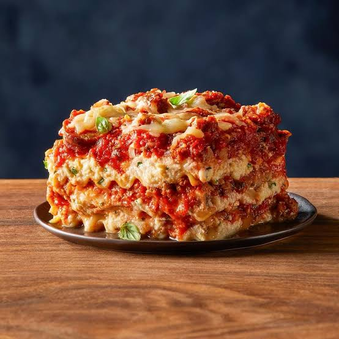

Lasagna

Description
Lasagna is a type of pasta made in wide, flat sheets. It originates in
Italian cuisine, where it is served in a number of ways, but is most often
served as a casserole made by stacked layers of pasta, alternating with
fillings that could consist of meat, dairy, vegetables, and sauces.
Ingredients
Meat Sauce:
- 1 pound lean ground beef
- 1 onion chopped
- 1 can mushrooms drained
- 1 jar spaghetti sauce
Cheese Filling:
- 1package cottage cheese
- 1 pint part-skim ricotta cheese
- 2 large eggs
- 1/4 grated Parmesan cheese
Other:
- 1 package lasgna noodles
- 8 ounces shredded mozzarella cheese divided
Steps
-
Step-1: Gather all ingredient, and preheat the oven to 350 degrees F
-
Step-2: Make sauce: Heat a large skillet over medium-high heat. Cook and
stir ground beef in the hot skillet until browned and crumbly, 5 to 7
minutes. Add onion and mushrooms; sauté until onions are transparent.
Stir in pasta sauce and cook until heated through. Set aside.
-
step-3: Make filling: Combine cottage cheese, ricotta, eggs, and
Parmesan in a medium bowl and set aside
-
step-4: Spread a thin layer of meat sauce in the bottom of a 13x9-inch
dish. Layer with uncooked lasagna noodles, cheese filling, mozzarella,
and meat sauce. Continue layering until all components are used,
reserving 1/2 cup mozzarella. Cover the dish with aluminum foil.
-
Step-5: Bake in the preheated oven for 45 minutes. Remove foil and top
with reserved 1/2 cup mozzarella. Continue baking until cheese is
melted, about 15 more minutes. Let lasagna stand for 10 to 15 minutes
before serving.
- Step-6: Serve warm and enjoy!
Home